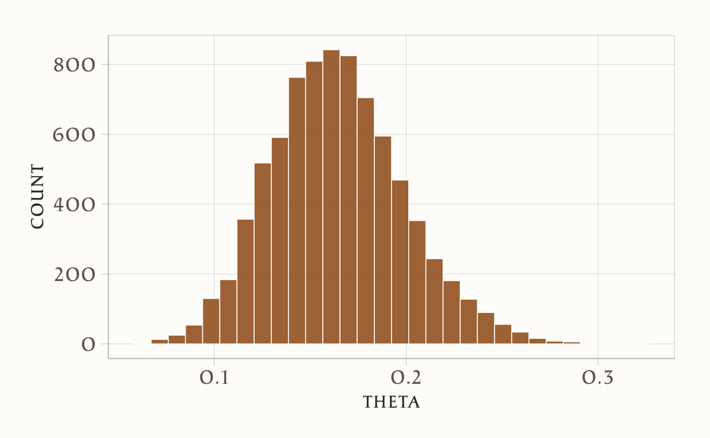
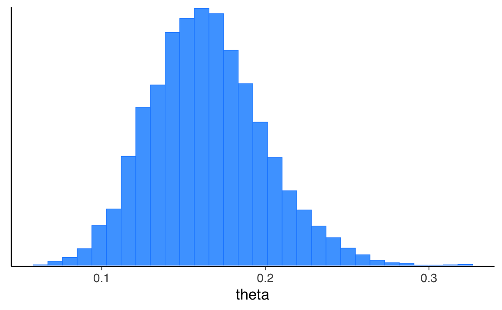
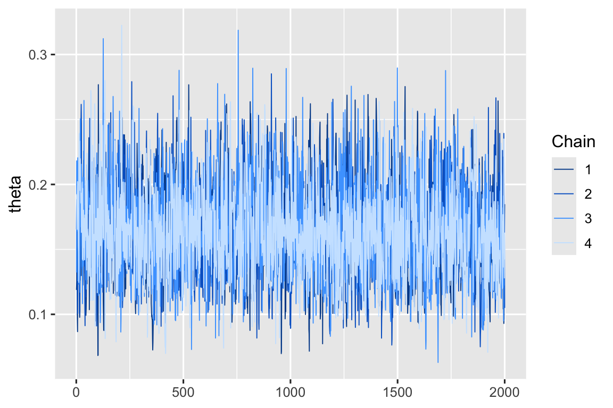
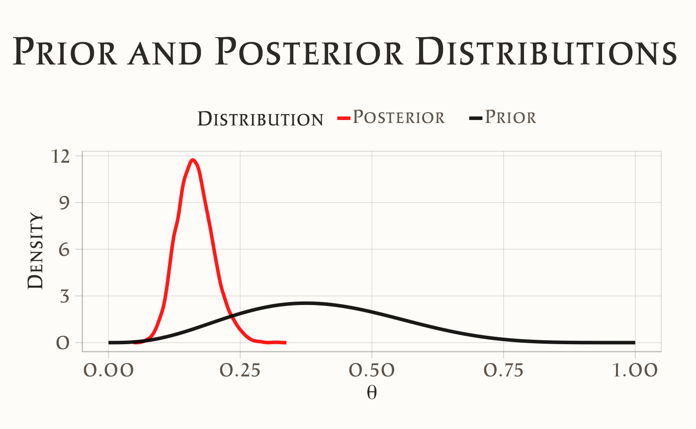
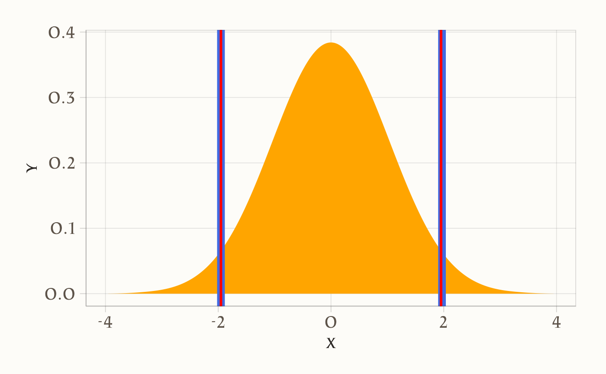
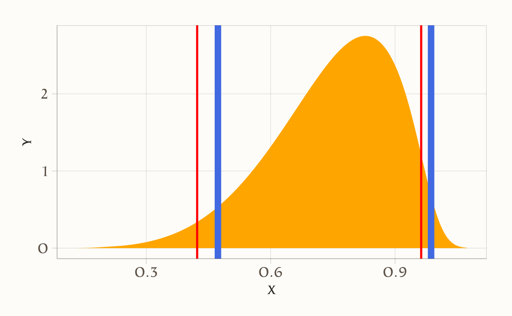
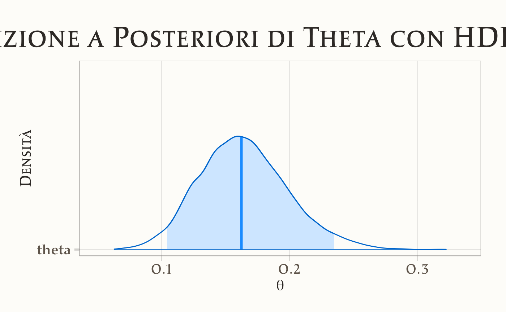

here::here("code", "_common.R") |> source()
# Load packages
if (!requireNamespace("pacman")) install.packages("pacman")
pacman::p_load(cmdstanr, posterior, qs, rstanarm, bayestestR, insight, see)
color_scheme_set("brightblue")42 Metodi di sintesi della distribuzione a posteriori
Prerequisiti
Concetti e Competenze Chiave
Preparazione del Notebook
42.1 Introduzione
L’obiettivo di questo capitolo è illustrare come sintetizzare una distribuzione a posteriori ottenuta attraverso il campionamento MCMC (Markov Chain Monte Carlo). Questa tecnica è fondamentale nell’inferenza bayesiana moderna, permettendo di comprendere e interpretare i parametri di interesse in modo probabilistico.
42.1.1 Cos’è la Distribuzione a Posteriori?
La distribuzione a posteriori rappresenta la nostra conoscenza aggiornata sui parametri di interesse. Essa combina l’informazione iniziale (distribuzione a priori) con le evidenze empiriche (dati osservati) attraverso il modello statistico. È un concetto chiave che distingue l’approccio bayesiano dall’inferenza classica.
42.2 Sintesi della Distribuzione a Posteriori
Il risultato di un’analisi bayesiana è una distribuzione a posteriori, contenente tutte le informazioni sui parametri dati un modello e un insieme di dati. Pertanto, riassumere la distribuzione a posteriori significa sintetizzare le conseguenze logiche del modello e dei dati analizzati. È prassi comune riportare, per ciascun parametro, una misura di posizione centrale (come la media, la moda o la mediana) per fornire un’idea della localizzazione della distribuzione, accompagnata da una misura di dispersione, quale la deviazione standard, per quantificare l’incertezza delle stime. La deviazione standard è adeguata per distribuzioni simili alla normale, ma può risultare fuorviante per distribuzioni di altra natura, come quelle asimmetriche.
Per riassumere la dispersione di una distribuzione a posteriori, si utilizza spesso l’Intervallo di Densità Più Alta (HDI, Highest-Density Interval). L’HDI è l’intervallo più breve che contiene una data porzione della densità di probabilità. Ad esempio, se diciamo che l’HDI al 95% per un’analisi è [2, 5], intendiamo che, secondo i nostri dati e modello, il parametro in questione si trova tra 2 e 5 con una probabilità di 0.95. Non vi è nulla di particolare nella scelta del 95%, del 50% o di qualsiasi altro valore; siamo liberi di scegliere, ad esempio, l’intervallo HDI all’89% o al 94% secondo le nostre preferenze. Idealmente, le giustificazioni per queste scelte dovrebbero dipendere dal contesto e non essere automatiche, ma è accettabile stabilire un valore comune come il 95%.
42.3 Campionamento con Stan
A scopo illustrativo, immaginiamo di aver condotto un’analisi campionando casualmente 100 opere dal Museum of Modern Art (MoMA) e di aver riscontrato che 14 sono di artisti della Generazione X. Utilizzeremo un modello Beta-Binomiale per affrontare questo problema. Il parametro θ rappresenterà la proporzione di artisti della Generazione X. Adotteremo una distribuzione a priori Beta(4, 6), che riflette un’aspettativa iniziale basata su conoscenze pregresse. I dati osservati (14 opere su 100) verranno utilizzati per aggiornare questa distribuzione iniziale.
42.4 Implementazione in Stan
Il seguente codice Stan definisce il nostro modello probabilistico:
# Path to the Stan file
stan_file <- here::here("stan", "moma.stan")
# Create a CmdStanModel object
mod <- cmdstan_model(stan_file)mod$print()
#> data {
#> int<lower=0> N; // Numero totale di prove
#> int<lower=0> y; // Numero di successi osservati
#> real<lower=0> alpha_prior; // Parametro alpha della distribuzione Beta a priori
#> real<lower=0> beta_prior; // Parametro beta della distribuzione Beta a priori
#> }
#>
#> parameters {
#> real<lower=0, upper=1> theta; // Probabilità di successo
#> }
#>
#> model {
#> // Distribuzione a priori Beta
#> theta ~ beta(alpha_prior, beta_prior);
#>
#> // Likelihood binomiale
#> y ~ binomial(N, theta);
#> }
#>
#> generated quantities {
#> real log_lik; // Log-verosimiglianza
#> log_lik = binomial_lpmf(y | N, theta);
#> }Procediamo con l’implementazione pratica del modello per stimare la proporzione di artisti della Generazione X (θ) al MoMA.
Definiamo i dati osservati e i parametri della distribuzione a priori:
N <- 100
y <- 14
stan_data <- list(
N = N,
y = y,
alpha_prior = 4,
beta_prior = 6
)Eseguiamo il campionamento utilizzando il modello compilato in precedenza:
fit <- mod$sample(
data = stan_data,
seed = 123,
chains = 4,
parallel_chains = 4,
iter_sampling = 2000,
iter_warmup = 2000,
show_messages = FALSE
)Per evitare di dover ripetere il campionamento (che può essere computazionalmente costoso), possiamo salvare l’oggetto fit su disco utilizzando la funzione qsave() del pacchetto qs. Questo garantisce un caricamento rapido e senza perdita di dati.
# Save the object to a file.
qs::qsave(x = fit, file = "fit_moma.qs")Se in seguito vogliamo analizzare i risultati senza dover ripetere il campionamento, possiamo leggere l’oggetto salvato direttamente nel nostro ambiente R:
# Read the object.
fit2 <- qs::qread("fit_moma.qs")L’oggetto fit2 è identico a fit e contiene tutte le informazioni relative al modello, ai parametri, ai campioni e ai metadati.
42.5 Analisi della distribuzione a posteriori
La distribuzione a posteriori rappresenta la nostra conoscenza aggiornata riguardo al valore del parametro \(\theta\) dopo aver osservato i dati. Combina le nostre credenze a priori riguardo al parametro (la distribuzione a priori) con le nuove evidenze fornite dai dati osservati (la funzione di verosimiglianza) per ottenere una nuova distribuzione che riflette la nostra comprensione aggiornata del parametro, ovvero la distribuzione a posteriori.
La distribuzione a posteriori ci dice quanto sia probabile ogni possibile valore del parametro alla luce dei dati osservati. Un picco stretto indica che i dati sono molto informativi rispetto al parametro, portando a una maggiore certezza nella sua stima. Un picco largo, invece, indica maggiore incertezza.
42.6 Esaminare i Valori della Distribuzione a Posteriori
Dopo aver eseguito il campionamento con Stan, possiamo esaminare i valori della distribuzione a posteriori accedendo ai campioni generati.
42.6.1 Estrarre i Campioni in un Oggetto draws_array
Il metodo fit$draws() restituisce i campioni in un oggetto tridimensionale del tipo draws_array, che fa parte del pacchetto posterior.
# Estrazione dei campioni posteriori in formato array (default)
draws_arr <- fit2$draws()
str(draws_arr) # Struttura dell'oggetto
#> 'draws_array' num [1:2000, 1:4, 1:3] -50 -49.7 -49 -49.1 -51.4 ...
#> - attr(*, "dimnames")=List of 3
#> ..$ iteration: chr [1:2000] "1" "2" "3" "4" ...
#> ..$ chain : chr [1:4] "1" "2" "3" "4"
#> ..$ variable : chr [1:3] "lp__" "theta" "log_lik"L’output sarà un array 3D con le dimensioni iterazioni × catene × variabili, ovvero il formato standard per i campioni MCMC.
Per verificare le dimensioni dell’array:
dim(draws_arr)
#> [1] 2000 4 3Ad esempio, se l’output di dim(draws_arr) restituisce (2000, 4, 3), le dimensioni si riferiscono a:
- 2000: Numero di iterazioni di campionamento per ciascuna catena, specificato dall’argomento
iter_sampling = 2000durante il campionamento. - 4: Numero di catene eseguite in parallelo, specificato da
chains = 4. - 3: Numero di parametri o quantità campionate, inclusi:
- Parametri definiti nel blocco
parametersdel modello Stan. - Quantità trasformate (
transformed parameters). - Quantità generate (
generated quantities).
- Parametri definiti nel blocco
42.6.2 Interpretazione della Struttura
L’array 3D permette di accedere ai campioni in modo organizzato:
- Prima dimensione: Iterazioni per ciascuna catena (es.
draws_arr[1,,]restituisce i valori della prima iterazione di tutte le catene). - Seconda dimensione: Catene (es.
draws_arr[,1,]restituisce tutti i campioni della prima catena). - Terza dimensione: Variabili campionate (es.
draws_arr[,,1]restituisce i valori della prima variabile in tutte le iterazioni e catene).
42.6.3 Accesso ai Parametri
Per accedere ai campioni di un parametro specifico, possiamo utilizzare il nome del parametro con il metodo fit$draws(format = "matrix") o fit$draws(format = "df").
# Estrazione dei campioni in formato data frame
draws_df <- fit2$draws(format = "df")
# Visualizza i primi campioni della variabile "theta"
head(draws_df$theta)
#> [1] 0.1187770 0.1252060 0.1680210 0.1477010 0.0971118 0.086689042.6.4 Sintesi dei Campioni
Per riassumere i campioni della distribuzione a posteriori:
fit2$summary()
#> # A tibble: 3 × 10
#> variable mean median sd mad q5 q95 rhat ess_bulk
#> <chr> <dbl> <dbl> <dbl> <dbl> <dbl> <dbl> <dbl> <dbl>
#> 1 lp__ -49.5 -49.2 0.697 0.292 -50.9 -49.0 1.00 3699.
#> 2 theta 0.164 0.162 0.0345 0.0339 0.112 0.225 1.00 2813.
#> 3 log_lik -2.78 -2.46 0.827 0.397 -4.48 -2.17 1.00 3803.
#> # ℹ 1 more variable: ess_tail <dbl>42.6.5 Vantaggi del Formato draws_array
Il formato draws_array è particolarmente utile per:
- Analisi avanzate: Permette di accedere direttamente a specifiche iterazioni, catene e parametri.
- Visualizzazioni: È compatibile con funzioni di plotting del pacchetto bayesplot.
- Controlli diagnostici: Facilita l’analisi della convergenza e della miscelazione delle catene.
Con questa struttura, possiamo esplorare in dettaglio la distribuzione a posteriori generata dal modello Stan.
fit2$metadata()$model_params
#> [1] "lp__" "theta" "log_lik"Recuperiamo i campioni posteriori per theta:
draws_df <- fit2$draws(format = "df")
head(draws_df)
#> # A draws_df: 6 iterations, 1 chains, and 3 variables
#> lp__ theta log_lik
#> 1 -50 0.119 -2.4
#> 2 -50 0.125 -2.3
#> 3 -49 0.168 -2.5
#> 4 -49 0.148 -2.2
#> 5 -51 0.097 -3.1
#> 6 -52 0.087 -3.7
#> # ... hidden reserved variables {'.chain', '.iteration', '.draw'}draws_df$theta |>
head()
#> [1] 0.1187770 0.1252060 0.1680210 0.1477010 0.0971118 0.0866890length(draws_df$theta)
#> [1] 8000Generiamo un istogramma della distribuzione a posteriori di theta:
draws_df |>
ggplot(aes(theta)) +
geom_histogram()
#> `stat_bin()` using `bins = 30`. Pick better value with `binwidth`.
In alternativa, possiamo passare l’oggetto fit$draws("theta") alla funzione mcmc_hist() di bayesplot:
mcmc_hist(fit2$draws("theta"))
#> `stat_bin()` using `bins = 30`. Pick better value with `binwidth`.
Oppure possiamo usare la funzione mcmc_dens_overlay():
mcmc_dens_overlay(fit2$draws("theta"))
La traccia del campionamento si ottiene nel modo seguente:
mcmc_trace(fit2$draws("theta"))
Confrontiamo la distribuzione a posteriori con la distribuzione a priori di \(\theta\).
# Parameters of the Beta distribution
alpha <- 4
beta_param <- 6
# Create a data frame for the prior Beta distribution
x <- seq(0, 1, length.out = 1000)
prior_pdf <- dbeta(x, alpha, beta_param)
prior_df <- data.frame(theta = x, density = prior_pdf, distribution = "Prior")
# Extract posterior draws of theta and calculate density
posterior_theta <- as.vector(fit2$draws("theta")) # Assuming `fit2$draws("theta")` works
posterior_density <- density(posterior_theta)
posterior_df <- data.frame(
theta = posterior_density$x,
density = posterior_density$y,
distribution = "Posterior"
)
# Combine the prior and posterior data
combined_df <- bind_rows(prior_df, posterior_df)
# Plot using ggplot2
ggplot(combined_df, aes(x = theta, y = density, color = distribution)) +
geom_line(size = 1.2) +
labs(
x = expression(theta),
y = "Density",
title = "Prior and Posterior Distributions"
) +
scale_color_manual(
values = c("Prior" = "black", "Posterior" = "red"),
name = "Distribution"
) +
theme(
legend.position = "top",
plot.title = element_text(hjust = 0.5)
)
#> Warning: Using `size` aesthetic for lines was deprecated in ggplot2 3.4.0.
#> ℹ Please use `linewidth` instead.
Nel caso presente, la distribuzione a posteriori differisce in maniera importante dalla distribuzione a priori. Ciò indica che i dati hanno avuto un forte impatto sulle nostre credenze riguardo al valore del parametro.
42.7 Intervallo di Credibilità
Gli intervalli di credibilità sono uno strumento fondamentale nell’inferenza bayesiana per riassumere l’incertezza sui parametri stimati. Esistono due metodi principali per calcolare gli intervalli di credibilità:
- Highest Density Interval (HDI): definisce l’intervallo più stretto che contiene la probabilità specificata, includendo le aree di maggiore densità della distribuzione a posteriori.
- Equal-tailed Interval (ETI): lascia una probabilità uguale (ad esempio, il 2,5% per un intervallo al 95%) in entrambe le code della distribuzione.
Questi metodi producono risultati identici in caso di distribuzioni simmetriche ma differiscono per distribuzioni asimmetriche. Di seguito vediamo come interpretare e calcolare questi intervalli.
Distribuzione Simmetrica
Con una distribuzione a posteriori simmetrica, come quella normale, gli intervalli HDI ed ETI coincidono.
Esempio di calcolo:
# Genera una distribuzione normale
posterior <- distribution_normal(1000)
# Calcola HDI ed ETI
ci_hdi <- ci(posterior, method = "HDI")
ci_eti <- ci(posterior, method = "ETI")
# Visualizza la distribuzione con i limiti degli intervalli
out <- estimate_density(posterior, extend = TRUE)
ggplot(out, aes(x = x, y = y)) +
geom_area(fill = "orange") +
# HDI in blu
geom_vline(xintercept = ci_hdi$CI_low, color = "royalblue", linewidth = 3) +
geom_vline(xintercept = ci_hdi$CI_high, color = "royalblue", linewidth = 3) +
# ETI in rosso
geom_vline(xintercept = ci_eti$CI_low, color = "red", linewidth = 1) +
geom_vline(xintercept = ci_eti$CI_high, color = "red", linewidth = 1)
Distribuzione Asimmetrica
Quando la distribuzione a posteriori è asimmetrica, come una distribuzione beta, l’HDI è generalmente più stretto rispetto all’ETI poiché privilegia le regioni di maggiore densità.
Esempio di calcolo:
# Genera una distribuzione beta
posterior <- distribution_beta(1000, 6, 2)
# Calcola HDI ed ETI
ci_hdi <- ci(posterior, method = "HDI")
ci_eti <- ci(posterior, method = "ETI")
# Visualizza la distribuzione con i limiti degli intervalli
out <- estimate_density(posterior, extend = TRUE)
ggplot(out, aes(x = x, y = y)) +
geom_area(fill = "orange") +
# HDI in blu
geom_vline(xintercept = ci_hdi$CI_low, color = "royalblue", linewidth = 3) +
geom_vline(xintercept = ci_hdi$CI_high, color = "royalblue", linewidth = 3) +
# ETI in rosso
geom_vline(xintercept = ci_eti$CI_low, color = "red", linewidth = 1) +
geom_vline(xintercept = ci_eti$CI_high, color = "red", linewidth = 1)
42.7.1 Interpretazione dell’Intervallo di Credibilità
L’intervallo di credibilità bayesiano offre una chiara interpretazione probabilistica: dato il modello e i dati, c’è una probabilità specificata (ad esempio, il 94%) che il parametro si trovi all’interno dell’intervallo calcolato.
42.7.2 Calcolo degli intervalli in R
- HDI:
bayestestR::ci(fit2$draws("theta"), method = "HDI")
#> Highest Density Interval
#>
#> Parameter | 95% HDI
#> ------------------------
#> theta | [0.10, 0.23]- ETI:
bayestestR::ci(fit2$draws("theta"), method = "ETI")
#> Equal-Tailed Interval
#>
#> Parameter | 95% ETI
#> ------------------------
#> theta | [0.10, 0.24]42.7.3 Visualizzazione grafica
Utilizzando il pacchetto bayesplot possiamo rappresentare la distribuzione a posteriori con l’HDI:
mcmc_areas(fit2$draws("theta"),
prob = 0.94) + # Specifica il livello dell'HDI
ggtitle("Distribuzione a Posteriori di Theta con HDI al 94%") +
xlab(expression(theta)) +
ylab("Densità")
42.7.4 Confronto con gli Intervalli di Confidenza Frequentisti
Gli intervalli di credibilità bayesiani si distinguono nettamente dagli intervalli di confidenza frequentisti. Mentre gli intervalli frequentisti si basano su una prospettiva a lungo termine (ovvero, il 95% degli intervalli costruiti su infiniti campioni includerebbe il vero valore), gli intervalli bayesiani:
- Hanno una chiara interpretazione probabilistica: dato il modello e i dati, indicano direttamente la probabilità che il parametro sia nell’intervallo.
- Incorporano credenze a priori, combinate con l’evidenza fornita dai dati.
42.7.5 Scelta del Livello dell’Intervallo (89% vs 95%)
Una discussione comune nell’inferenza bayesiana riguarda il livello predefinito degli intervalli. Sebbene il 95% sia un valore convenzionale mutuato dal frequentismo, alcune evidenze suggeriscono che livelli più bassi (ad esempio, 89%) possano essere più stabili per le distribuzioni a posteriori, specialmente con un numero limitato di campioni posteriori (Kruschke, 2014).
- Vantaggi del 95%:
- Relazione intuitiva con la deviazione standard.
- Maggiore probabilità di includere 0, rendendo le analisi più conservative.
- Vantaggi dell’89%:
- Maggiore stabilità con campioni posteriori limitati.
- Evita l’arbitrarietà del valore 95% (McElreath, 2018).
In conclusione, la scelta tra HDI e ETI, così come il livello dell’intervallo, dipende dagli obiettivi e dal contesto dell’analisi. Gli intervalli di credibilità offrono un approccio flessibile e intuitivo per sintetizzare l’incertezza, adattandosi alle esigenze di analisi sia esplorative che confermative.
42.8 Test di Ipotesi Bayesiane
In alcune situazioni, descrivere semplicemente la distribuzione a posteriori potrebbe non essere sufficiente. Potremmo dover prendere decisioni pratiche basate sulle inferenze, traducendo stime continue in scelte binarie. Ad esempio, possiamo voler determinare se una terapia è efficace, se un intervento ha avuto successo, o se una proporzione supera una soglia di rilevanza pratica.
Supponiamo di voler verificare se, nel Museum of Modern Art (MoMA), gli artisti della generazione X (nati tra il 1965 e il 1980) rappresentano meno del 10% del corpus esposto. Analizzando un campione casuale di 100 opere e utilizzando un prior basato su convinzioni pregresse, stimiamo la distribuzione a posteriori della proporzione di artisti, \(\theta\). L’intervallo di credibilità (Credible Interval, CI) al 94% risulta compreso tra 0.104 e 0.235.
La nostra ipotesi iniziale è che la proporzione di artisti della generazione X sia inferiore al 10%, cioè \(\theta < 0.1\). Tuttavia, il fatto che l’intero intervallo di credibilità al 94% si trovi sopra la soglia del 10% contraddice questa ipotesi. Per quantificare ulteriormente la compatibilità dei dati con questa ipotesi, calcoliamo la probabilità a posteriori che \(\theta < 0.1\).
fit2$summary("theta", pr_lt_01 = ~ mean(. <= 0.1))
#> # A tibble: 1 × 2
#> variable pr_lt_01
#> <chr> <dbl>
#> 1 theta 0.0213La probabilità a posteriori che \(\theta < 0.1\)** è molto bassa, ovvero \(P(\theta < 0.1) = 0.0213\), fornendo ulteriori evidenze contro l’ipotesi che gli artisti della generazione X rappresentino meno del 10% del corpus esposto.
In sintesi, sulla base dei dati e del modello, l’ipotesi che gli artisti della generazione X rappresentino meno del 10% non è supportata. Al contrario, i dati indicano, con un livello di certezza soggettiva del 94%, che la proporzione di artisti appartenenti a questa generazione è molto probabilmente superiore al 10%.
42.9 Riflessioni conclusive
La crescente popolarità dei metodi bayesiani in psicologia e nelle scienze sociali è stata fortemente influenzata dalla (ri)scoperta di algoritmi numerici capaci di stimare le distribuzioni a posteriori dei parametri del modello a partire dai dati osservati. Prima di questi sviluppi, ottenere misure riassuntive delle distribuzioni a posteriori, soprattutto per modelli complessi con molti parametri, era praticamente impossibile.
Questo capitolo fornisce un’introduzione a cmdstanr, che permette di compilare ed eseguire modelli probabilistici espressi in linguaggio Stan. Grazie a questa tecnologia, è possibile generare una stima della distribuzione a posteriori attraverso il campionamento Markov Chain Monte Carlo (MCMC), rivoluzionando la capacità di effettuare inferenze bayesiane e rendendo l’analisi di modelli complessi più accessibile e gestibile.
Inoltre, nel capitolo sono state presentate diverse strategie per la trasformazione della distribuzione a posteriori e sono state esplorate modalità per ottenere intervalli di credibilità. Successivamente, è stata discussa l’analisi delle ipotesi a posteriori, che consente di confrontare due ipotesi contrapposte riguardanti il parametro \(\theta\).
Informazioni sull’Ambiente di Sviluppo
sessionInfo()
#> R version 4.4.2 (2024-10-31)
#> Platform: aarch64-apple-darwin20
#> Running under: macOS Sequoia 15.1.1
#>
#> Matrix products: default
#> BLAS: /Library/Frameworks/R.framework/Versions/4.4-arm64/Resources/lib/libRblas.0.dylib
#> LAPACK: /Library/Frameworks/R.framework/Versions/4.4-arm64/Resources/lib/libRlapack.dylib; LAPACK version 3.12.0
#>
#> locale:
#> [1] C/UTF-8/C/C/C/C
#>
#> time zone: Europe/Rome
#> tzcode source: internal
#>
#> attached base packages:
#> [1] stats graphics grDevices utils datasets methods base
#>
#> other attached packages:
#> [1] see_0.9.0 insight_1.0.0 bayestestR_0.15.0
#> [4] rstanarm_2.32.1 Rcpp_1.0.13-1 qs_0.27.2
#> [7] posterior_1.6.0 cmdstanr_0.8.1.9000 MASS_7.3-61
#> [10] viridis_0.6.5 viridisLite_0.4.2 ggpubr_0.6.0
#> [13] ggExtra_0.10.1 gridExtra_2.3 patchwork_1.3.0
#> [16] bayesplot_1.11.1 psych_2.4.6.26 scales_1.3.0
#> [19] markdown_1.13 knitr_1.49 lubridate_1.9.3
#> [22] forcats_1.0.0 stringr_1.5.1 dplyr_1.1.4
#> [25] purrr_1.0.2 readr_2.1.5 tidyr_1.3.1
#> [28] tibble_3.2.1 ggplot2_3.5.1 tidyverse_2.0.0
#> [31] rio_1.2.3 here_1.0.1
#>
#> loaded via a namespace (and not attached):
#> [1] tensorA_0.36.2.1 jsonlite_1.8.9 datawizard_0.13.0
#> [4] magrittr_2.0.3 nloptr_2.1.1 farver_2.1.2
#> [7] rmarkdown_2.29 vctrs_0.6.5 minqa_1.2.8
#> [10] base64enc_0.1-3 rstatix_0.7.2 htmltools_0.5.8.1
#> [13] distributional_0.5.0 curl_6.0.1 broom_1.0.7
#> [16] Formula_1.2-5 StanHeaders_2.32.10 htmlwidgets_1.6.4
#> [19] plyr_1.8.9 zoo_1.8-12 igraph_2.1.1
#> [22] mime_0.12 lifecycle_1.0.4 pkgconfig_2.0.3
#> [25] colourpicker_1.3.0 Matrix_1.7-1 R6_2.5.1
#> [28] fastmap_1.2.0 shiny_1.9.1 digest_0.6.37
#> [31] colorspace_2.1-1 ps_1.8.1 rprojroot_2.0.4
#> [34] crosstalk_1.2.1 labeling_0.4.3 fansi_1.0.6
#> [37] timechange_0.3.0 abind_1.4-8 compiler_4.4.2
#> [40] withr_3.0.2 backports_1.5.0 inline_0.3.20
#> [43] shinystan_2.6.0 carData_3.0-5 QuickJSR_1.4.0
#> [46] pkgbuild_1.4.5 ggsignif_0.6.4 gtools_3.9.5
#> [49] loo_2.8.0 tools_4.4.2 httpuv_1.6.15
#> [52] threejs_0.3.3 glue_1.8.0 nlme_3.1-166
#> [55] promises_1.3.2 grid_4.4.2 checkmate_2.3.2
#> [58] reshape2_1.4.4 generics_0.1.3 gtable_0.3.6
#> [61] tzdb_0.4.0 data.table_1.16.2 RApiSerialize_0.1.4
#> [64] hms_1.1.3 stringfish_0.16.0 car_3.1-3
#> [67] utf8_1.2.4 pillar_1.9.0 later_1.4.1
#> [70] splines_4.4.2 lattice_0.22-6 survival_3.7-0
#> [73] tidyselect_1.2.1 miniUI_0.1.1.1 V8_6.0.0
#> [76] stats4_4.4.2 xfun_0.49 matrixStats_1.4.1
#> [79] DT_0.33 rstan_2.32.6 stringi_1.8.4
#> [82] boot_1.3-31 yaml_2.3.10 pacman_0.5.1
#> [85] evaluate_1.0.1 codetools_0.2-20 cli_3.6.3
#> [88] RcppParallel_5.1.9 shinythemes_1.2.0 xtable_1.8-4
#> [91] munsell_0.5.1 processx_3.8.4 parallel_4.4.2
#> [94] rstantools_2.4.0 dygraphs_1.1.1.6 lme4_1.1-35.5
#> [97] ggridges_0.5.6 xts_0.14.1 rlang_1.1.4
#> [100] mnormt_2.1.1 shinyjs_2.1.0